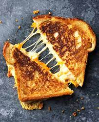

Grilled Cheese

Description
Grilled cheese is an American classic struggle-food.
Ingredients
Steps
- Head pan, preferably cast iron
- While pan is heating, add cheese to slice of bread
- Place other slice of bread on top
- Butter outside of bread
- Place sandwich in pan, cook on medium heat until golden brown on one side, flip sandwich
- Repeat on other side